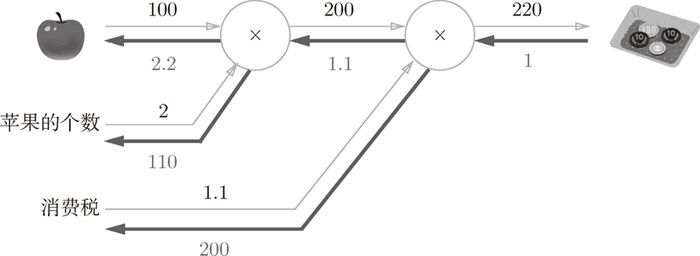
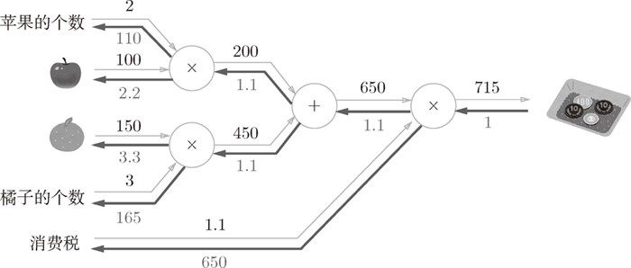

下一节，我们将把构建神经网络的“层”实现为一个类。这里所说的“层”是神经网络中功能的单位。比如，负责 sigmoid 函数的
下一节，我们将把构建神经网络的“层”实现为一个类。这里所说的“层”是神经网络中功能的单位。比如，负责 sigmoid 函数的 Sigmoid、负责矩阵乘积的 Affine 等，都以层为单位进行实现。因此，这里也以层为单位来实现乘法节点和加法节点。
本节将用 Python 实现前面的购买苹果的例子。这里，我们把要实现的计算图的乘法节点称为“乘法层”（MulLayer），加法节点称为“加法层”（AddLayer）。
Sigmoid、负责矩阵乘积的Affine等，都以层为单位进行实现。因此，这里也以层为单位来实现乘法节点和加法节点。
层的实现中有两个共通的方法（接口）forward() 和 backward()。forward() 对应正向传播，backward() 对应反向传播。
现在来实现乘法层。乘法层作为 MulLayer 类，其实现过程如下所示（源代码在 ch05/layer_naive.py 中）。
class MulLayer:
def __init__(self):
self.x = None
self.y = None
def forward(self, x, y):
self.x = x
self.y = y
out = x * y
return out
def backward(self, dout):
dx = dout * self.y # 翻转x和y
dy = dout * self.x
return dx, dy
__init__() 中会初始化实例变量 x 和 y，它们用于保存正向传播时的输入值。forward() 接收 x 和 y 两个参数，将它们相乘后输出。backward() 将从上游传来的导数（dout）乘以正向传播的翻转值，然后传给下游。
上面就是 MulLayer 的实现。现在我们使用 MulLayer 实现前面的购买苹果的例子（2 个苹果和消费税）。上一节中我们使用计算图的正向传播和反向传播，像图 5-16 这样进行了计算。

图 5-16 购买 2 个苹果
使用这个乘法层的话，图 5-16 的正向传播可以像下面这样实现（源代码在 ch05/buy_apple.py 中）。
apple = 100
apple_num = 2
tax = 1.1
# layer
mul_apple_layer = MulLayer()
mul_tax_layer = MulLayer()
# forward
apple_price = mul_apple_layer.forward(apple, apple_num)
price = mul_tax_layer.forward(apple_price, tax)
print(price) # 220
此外，关于各个变量的导数可由 backward() 求出。
# backward
dprice = 1
dapple_price, dtax = mul_tax_layer.backward(dprice)
dapple, dapple_num = mul_apple_layer.backward(dapple_price)
print(dapple, dapple_num, dtax) # 2.2 110 200
这里，调用 backward() 的顺序与调用 forward() 的顺序相反。此外，要注意 backward() 的参数中需要输入“关于正向传播时的输出变量的导数”。比如，mul_apple_layer 乘法层在正向传播时会输出 apple_price，在反向传播时，则会将 apple_price 的导数 dapple_price 设为参数。另外，这个程序的运行结果和图 5-16 是一致的。
接下来，我们实现加法节点的加法层，如下所示。
class AddLayer:
def __init__(self):
pass
def forward(self, x, y):
out = x + y
return out
def backward(self, dout):
dx = dout * 1
dy = dout * 1
return dx, dy
加法层不需要特意进行初始化，所以 __init__() 中什么也不运行（pass 语句表示“什么也不运行”）。加法层的 forward() 接收 x 和 y 两个参数，将它们相加后输出。backward() 将上游传来的导数（dout）原封不动地传递给下游。
现在，我们使用加法层和乘法层，实现图 5-17 所示的购买 2 个苹果和 3 个橘子的例子。

图 5-17 购买 2 个苹果和 3 个橘子
用 Python 实现图 5-17 的计算图的过程如下所示（源代码在 ch05/buy_apple_orange.py 中）。
apple = 100
apple_num = 2
orange = 150
orange_num = 3
tax = 1.1
# layer
mul_apple_layer = MulLayer()
mul_orange_layer = MulLayer()
add_apple_orange_layer = AddLayer()
mul_tax_layer = MulLayer()
# forward
apple_price = mul_apple_layer.forward(apple, apple_num) #(1)
orange_price = mul_orange_layer.forward(orange, orange_num) #(2)
all_price = add_apple_orange_layer.forward(apple_price, orange_price) #(3)
price = mul_tax_layer.forward(all_price, tax) #(4)
# backward
dprice = 1
dall_price, dtax = mul_tax_layer.backward(dprice) #(4)
dapple_price, dorange_price = add_apple_orange_layer.backward(dall_price) #(3)
dorange, dorange_num = mul_orange_layer.backward(dorange_price) #(2)
dapple, dapple_num = mul_apple_layer.backward(dapple_price) #(1)
print(price) # 715
print(dapple_num, dapple, dorange, dorange_num, dtax) # 110 2.2 3.3 165 650
这个实现稍微有一点长，但是每一条命令都很简单。首先，生成必要的层，以合适的顺序调用正向传播的 forward() 方法。然后，用与正向传播相反的顺序调用反向传播的 backward() 方法，就可以求出想要的导数。
综上，计算图中层的实现（这里是加法层和乘法层）非常简单，使用这些层可以进行复杂的导数计算。下面，我们来实现神经网络中使用的层。